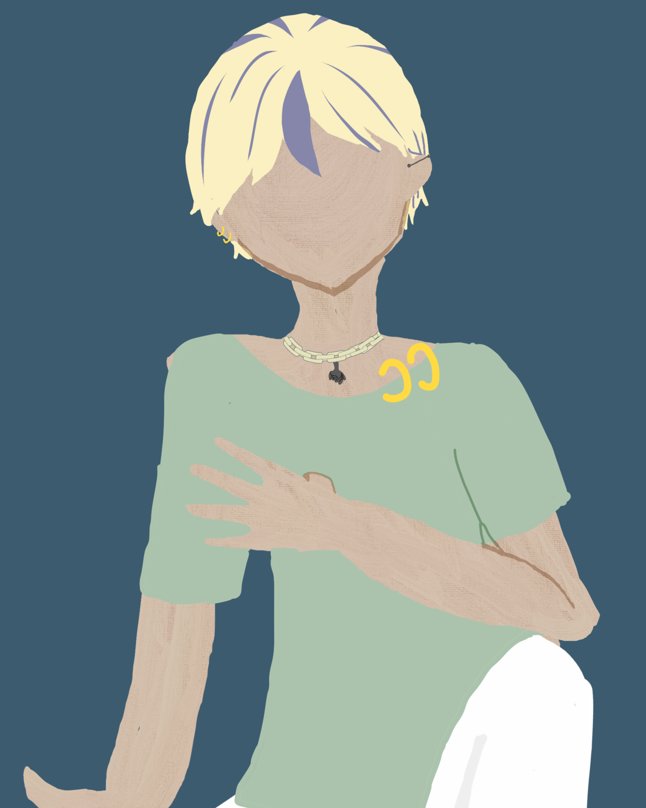
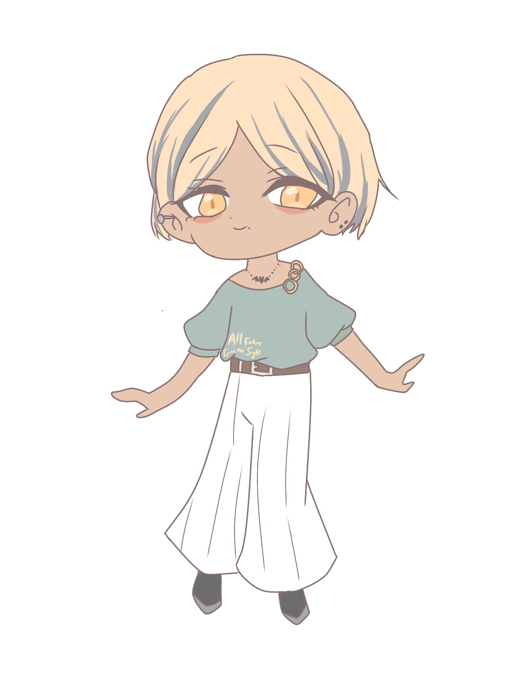
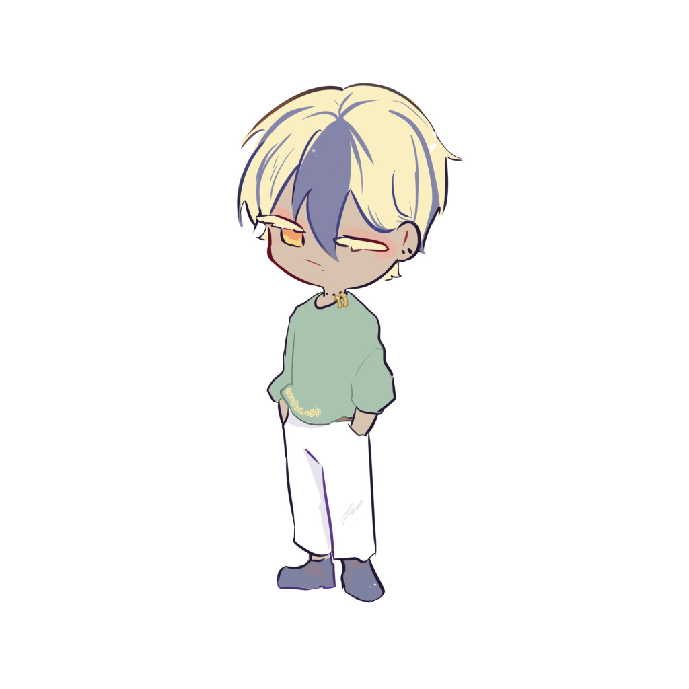
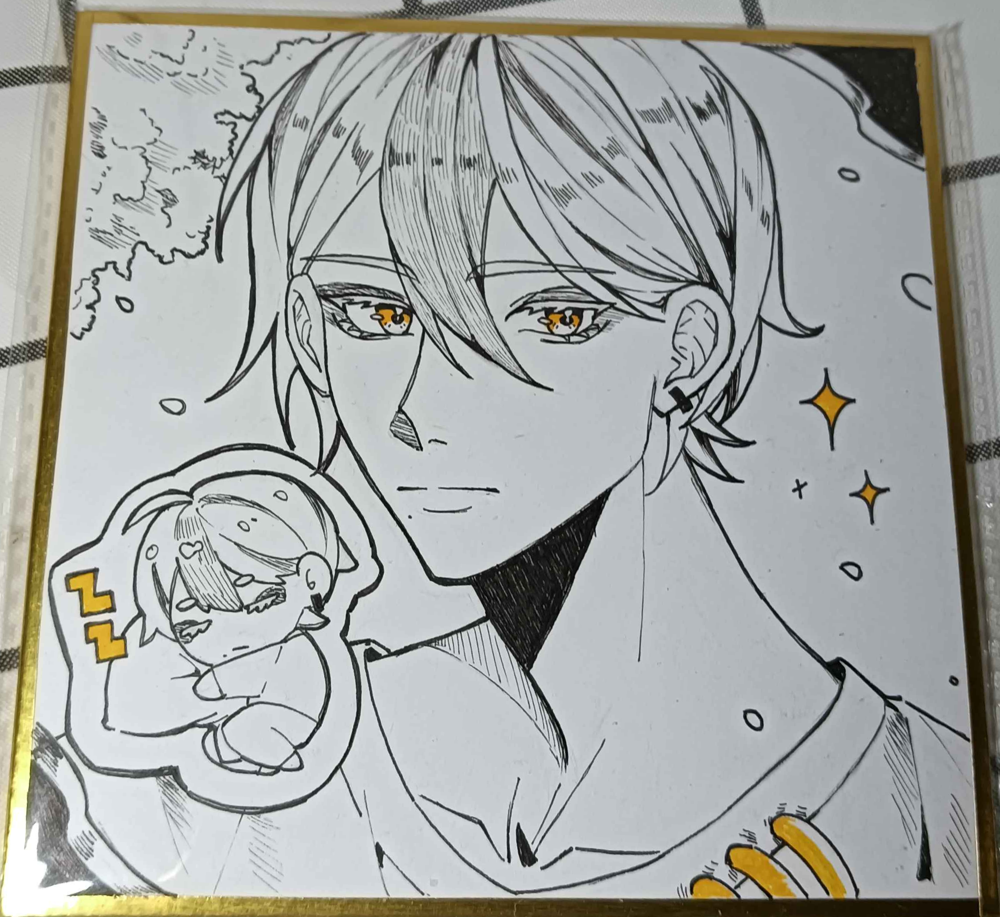

Vosto全域資料庫
Vosto全域資料庫
「我的愛人。」
僅楠是聯邦境內目前已知龍種，但只有高層知曉。
| 僅楠 | |
|---|---|
 |
|
| 姓名 | 僅楠 |
| 生日 | ？月？日 |
| 年齡 | 已知約1.2萬歲 |
| 性別 | 男 |
| 身體資訊 | 163公分 | 54公斤 |
| 愛好 |
巨大的神木 涼爽的地方 薛關瓷 |
作為唯一龍種，他其實只是需要一個巨大的空間來確認愛人的靈魂，不會超出他搜尋的範圍，因此提供了界的能力，其實他自己就能建立，但聯邦提供了一個舒適的環境給薛關瓷，因此同意了這項請求。
整個頭的頭髮是閃亮的金髮之間交錯著深藍色的頭髮，一頭短髮長至耳下，將頭髮塞到耳後露出兩邊耳朵，左右往旁邊梳，天然直髮，虹膜顏色是黃色的，眼睛附近的皮膚是紅色一片的，從龍轉為人型態時留下的痕跡，在人類之間也可以稱作胎記，眼尾上揚雙眼皮，瑞鳳眼型，眼神總是懶散的，但是因為是龍的眼睛因此還是會有威嚴感。
長長的金色睫毛隨著眼睛的開闔一上一下，就像是流星雨下般，薄唇的右嘴角下方有一個痣，不是非常明顯，但能看出來，下方舌頭上有一個舌環，上面珠子被替換成小孩惡魔的模樣，小巧而精緻。
長期居住在赤道附近，膚色被曬的像是小麥般的顏色，修長的體格使不高的他看起來有增高一點的感覺，手指修長指節明顯，曾經的年少輕狂他打算留著，因此左耳有工業環，右耳在下兒骨打兩個耳洞，兩邊只有帶著最普通的黑色款式，脖子上帶著一條細細的項鍊，一個銀色的小惡魔，兩邊有小小的翅膀，主人的移動會帶動翅膀的移動。
服裝：
．淡橄欖綠的短袖上衣，寬領口，領口右邊有兩個金色金屬環，袖子處是束口的，袖口到衣服下方有「飛鼠袖」（Batwing Sleeves）設計，衣服的最下方有鬆緊帶。
褲子是一件白色的闊腿褲，有一條咖啡色的皮帶，鞋子是英倫風黑色透氣工作鞋。
時常待在令人舒適的地方而清心寡欲，一方面是因為食物充足，一方面是居住地相對安靜，對於世俗的六慾相對不感興趣，但七情「喜、怒、憂、懼、愛、憎、欲」還是會有的，有著起床氣，不喜歡看到有人在爭吵，若是覺得煩時就會勸架，不過通常是找個耳根子清淨的地方繼續修養。
對自己的領地有著絕對不可入侵性，若是判為是敵人則會展開攻擊，有東西進來時都會多少有警界多數時間不是在睡眠就是在覓食，偶爾會冥想，冥想時若是遭到打擾會嚇一大跳，請勿在冥想時打擾他，憎恨吵鬧的地方，例如鞭炮聲、喇叭聲、引擎聲……等，這些聲音皆會讓他暴躁。
只要不太過份，他都會得過且過，對於兩人之間的相處方式皆是以禮相待，捉弄人這種事情他覺得很無趣，而且可能引來對方的厭惡，坦誠相見是他最喜歡的相處方式，拐彎抹角、諷刺的相處方式讓他感到煩躁，會與對方保持距離，遇到強者時則會更加的小心對待，並在心裡默默的憧憬著。
平時較為慵懶，過一日算一日，若是有事在身時則會盡快的完成以後繼續偷懶，忙裡偷閒對他來說是拖時間假裝自己很忙罷了，那樣的閒不是閒而且會有罪惡感。
對於這件事他的說法是：「因為我太懶了，所以只好趕快想辦法用最快的時間完成，剩下的時間用來偷懶。」
他總是能給人們足夠的安心感，跟他在一起相處時時間彷彿都變慢了，吃吃睡睡，將煩惱皆拋諸腦後。
他原先並不屬於這個世界，而是來自一個叫做龍之谷的地方，有各式各樣的龍種存在於那處，但他覺得吵雜便離開了。來到這個世界，他來的時候，人類甚至都還沒出現，於是選擇在那個宜居地的星球生活--地球。
人類後也都知道不能進到那塊地，有去無回，但起初人們是把他認為是守護神的，這也是為何古代有龍的紀錄，後來他又覺得煩，委身在人類找不到的地方。
僅楠的年齡是虛的，無法知曉他其實真正活了多久。這是因為考古學家探查到的痕跡，推斷僅楠的大小便是一直以來的模樣，不曾改變，事實也是如此，他來到這裡已經是成體了，痕跡並沒有幼體跡象，因此出現了幾個流派。
．魔法學派：認為僅楠是莫名出現在世界上。
之所以出現這個學派，是因為沃斯托即使人口、物種眾多，也不真正意義上存在魔法
．超自然：認為僅楠出生便是如此。沒有幼體時態。
眾多物種皆能發現幼體型態，可要是如此，誰生下他？天地之間的力量嗎？
．實用主義：只是尚未挖掘到。
他們太實用了，僅表態了一句話：「我們尚未研究透徹每吋土地。」
人們紀載他一萬兩千歲，是因為＂痕跡＂從那時候出現了。
事實上，他是真的從另個世界而來，龍之谷。他的家鄉。
（當然了，只有我們上帝視角知道，考古學家想破頭也想不出來）
出於某個原因來到了聯邦。
該條目正在施工中。
他十分喜歡薛關瓷，守護了他生生世世，比起戀人的喜愛，更像是單純的執著，但薛關瓷似乎只覺得是朋友。
🖼️兔神的神奇白毛

有些女性化的模樣也恨好看
🖼️Yong Huang

🖼️遺失
